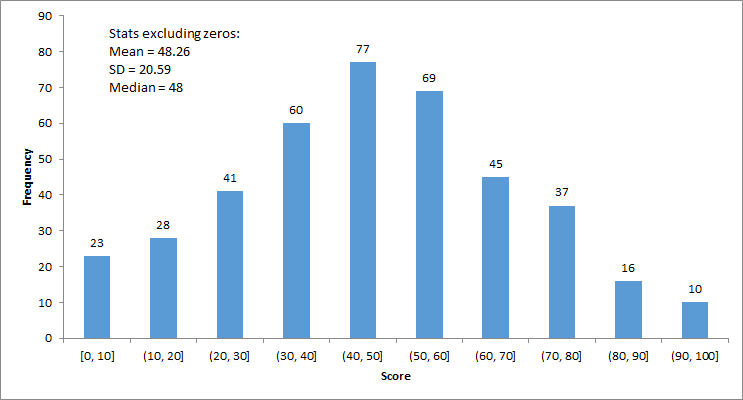
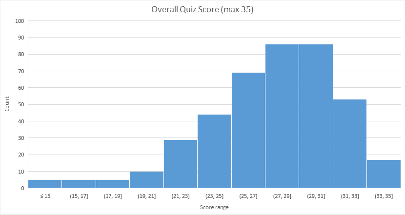

Final exam stats
Quiz stats (max 35 points, after considering regrading result and mock participation; see our announcement)
Mean = 27.9; SD = 4.09
Grading Scheme
Important: To pass this course, it is not sufficient to have your total score greater than or equal to the pass mark. You are also required to obtain a separate pass mark in your exams. That is, to pass, you are required to have
X and Y will be determined at the end of the semester but we may promise you that:
- X will not be greater than 50, and
- Y will not be greater than 16.
| lab exercises | 10% |
| programming assignments | 37% (10%, 12%, 15%) |
| quiz | 10% |
| final exam | 43% |
| TOTAL |
100% |
You may check your own grades anytime using the Canvas system.